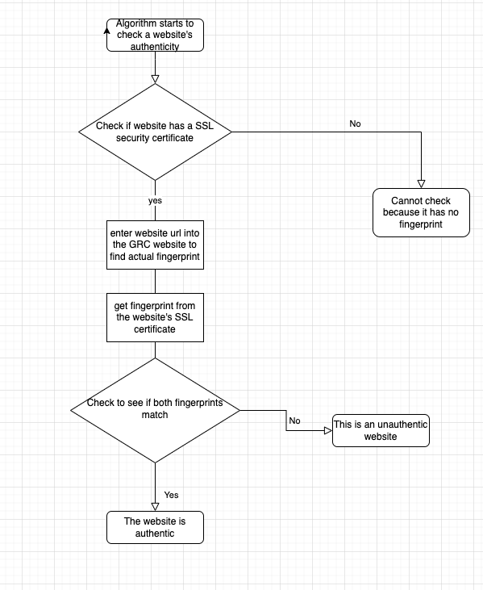

Fingerprints
Jishnu Devarapalli
Allen High School, STEAM Campus
Computer Science II
Mr. Ben-Yakov
September 21, 2022
What are the two primary purposes of a secure, HTTPS connection?
The primary purposes of a secure HTTPS connection are to ensure that all data coming and going from the site is
encrypted and also to make sure that the user is on an authentic site.
What is an HTTPS Proxy Appliance??
An HTTPS Proxy Appliance is a way that an organization such as a school or company monitors the data of their students
or employees using a fake authenticator in order to trick the browser into thinking that the site is secure. This
allows the organization to view or manage or set restrictions on data.
What is MITM? What risks does this present??
A MITM is a man-in-the-middle attack which is when someone intercepts your data. This presents the risk of someone
stealing your data when it is coming or going.
What is a hash? What are the essential qualities that make a hash a "good" hash??
A hash is a mathematical algorithm that digests an SSL certificate's contents even if there is a small change in the
certificate the hash will be drastically changed.
What is a hash? What are the essential qualities that make a hash a "good" hash??
A certificate authority is an entity that signs and issues certificates to websites that they think are trusted.
Essentially a certificate authority puts their stamp of approval on websites that they believe to be legitimate; they
essentially stake their reputation on the fact that the website is trustworthy.
How can SSL interception be prevented??
An SSL interception cannot be prevented but it can be detected because it is very difficult to fool a security
certificate.
How can SSL interception be detected??
An SSL interception can be detected by looking at the fingerprint, if the website is fraudulent the fingerprint will
be different.
What is a false-positive? What is a false-negative??
A false positive is when it seems like the certificate is unauthentic but in actuality the sites, although they are
from the same company, may use different certificates. Another way to get a false positive is when the user
accidentally compares the wrong certificate. A false negative is when it seems like there was no interception but
there actually was. One case where that can happen is when the user verifies a certificate and it seems to be
authentic but actually, that connection was specifically ignored and other connections are being intercepted.
Does your school / government / ISP have a right to eavesdrop on your communications??
I think that organizations should not be able to eavesdrop on communications as it is a breach of privacy.
Additionally, it causes people to distrust the organization
References
Steve Gibson, G. I. B. S. O. N. R. E. S. E. A. R. C. H. C. O. R. P. O. R. A. T. I. O. N.
(n.d.). GRC : SSL TLS HTTPS web server certificate fingerprints . GRC | SSL TLS HTTPS Web Server Certificate
Fingerprint . Retrieved August 24, 2022, from https://www.grc.com/fingerprints.htm#top
What is MITM (man in the middle) attack: Imperva. Learning Center. (2019, December 29).
Retrieved September 17, 2022, from https://www.imperva.com/learn/application-security/man-in-the-middle-attack-mitm/
